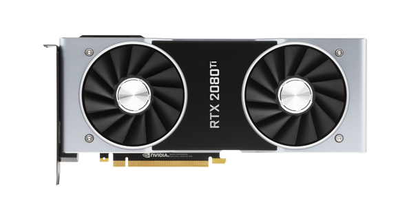
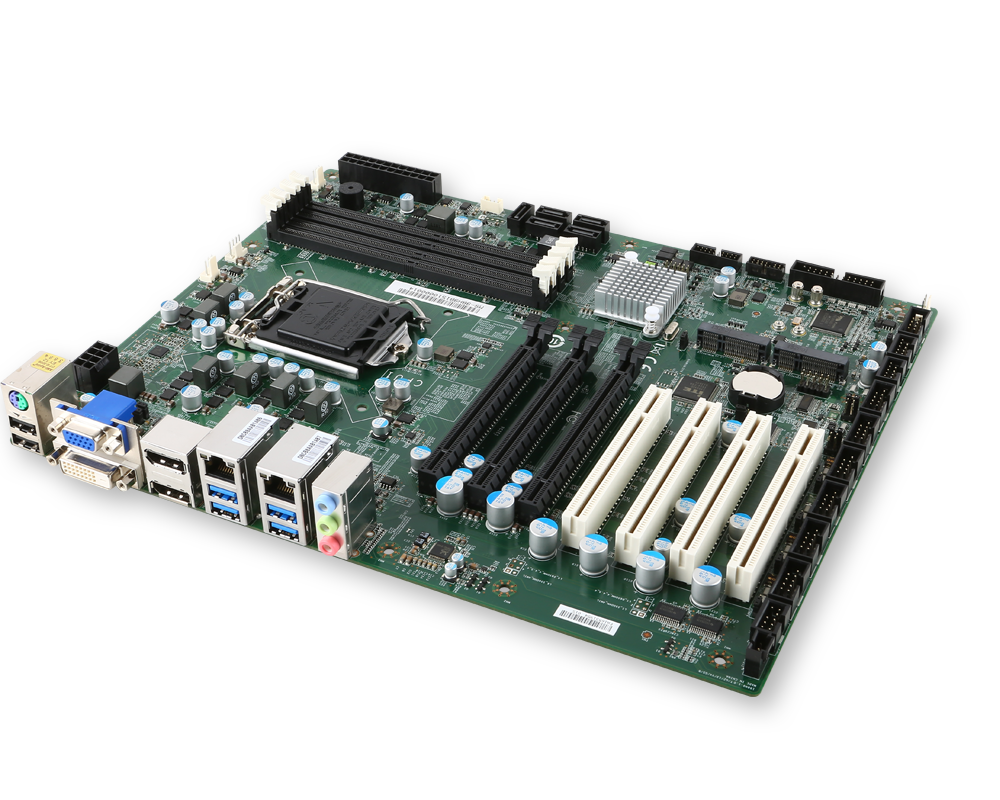
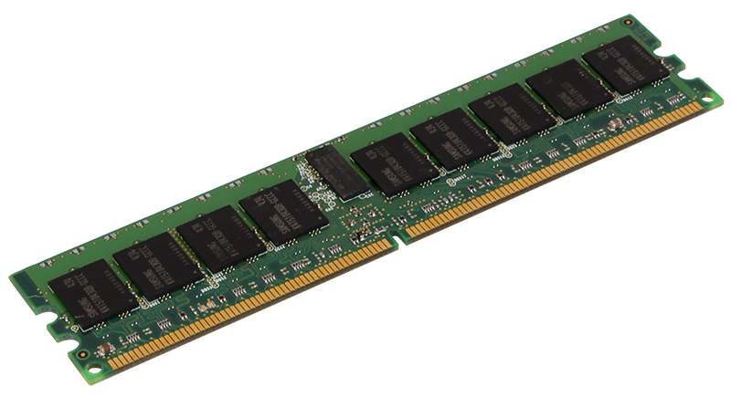
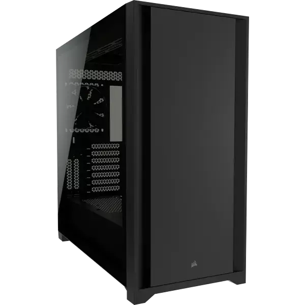

What is a CPU?
You can find a CPU in almost any device these days, all the way
from a smartwatch to a thermosthat. A CPU is the brain of the device. It
takes instructions from a program or application and performs a calculation.
A CPU fetches the instruction from RAM, decodes what the instruction is,
and then executes the instruction using relevant parts of the CPU. In modern systems,
the CPU acts like the ringmaster at the circus by feeding data to specialized hardware as it is required.

What is a GPU?
A GPU, otherwise known as a graphics card, is only relevant when
building a gaming PC. Today’s GPUs are
very good at processing large amounts of image information and performing parallel tasks,
making them incredibly fast at not only displaying text and graphics in windowed GUIs,
but also at processing the complex 3D graphics required for modern gaming experiences.

What is a motherboard?
The motherboard is the backbone that ties the computer's components together at one spot and
allows them to talk to each other. Without it, none of the computer pieces, such as the CPU, GPU,
or hard drive, could interact. Total motherboard functionality is necessary for a computer to work well.

What is RAM?
RAM is essentially a device’s short-term memory. It temporarily stores (remembers) everything currently running on a device,
like all OS-specific services and any web browser, image editor, or game you’re playing. The most significant consideration
when buying RAM for a PC is how much is needed. A minimum amount is required to run an operating system, while many games and
applications have a minimum requirement as well.

What is a computer case?
The computer case serves mainly as a way to physically mount and contain all the actual components inside a computer, like
the motherboard, hard drive, optical drive, floppy disk drive, etc. They typically come bundled with a power supply. Dust,
animals, toys, liquids, etc. can all damage the internal parts of a computer if the hard shell of a computer case doesn't
enclose them and keep them away from the outside environment.
